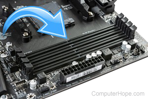
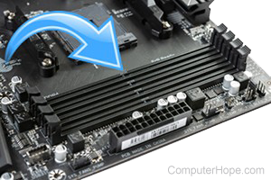

Las ranuras de memoria en una placa base son conectores donde se instalan los módulos de memoria RAM. Estas ranuras se denominan bancos de memoria y su cantidad y tipo pueden variar según el modelo de la placa base. Para una configuración óptima, se recomienda colocar una memoria RAM en la ranura dos (A2) y la segunda en la ranura cuatro (B2).